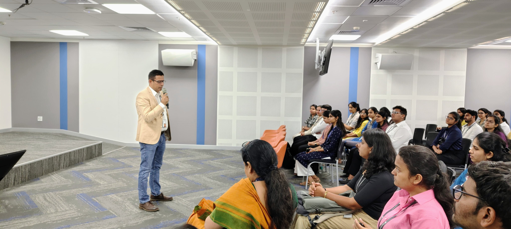
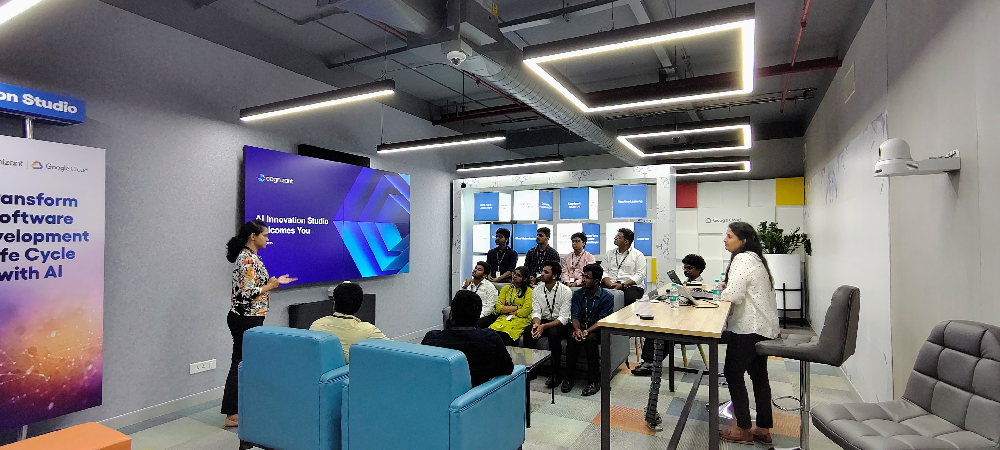
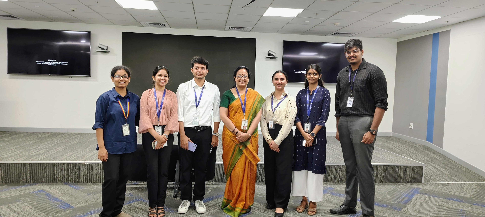

Usually, I'm sitting in the audience — listening, taking notes, observing. This time, I was on the other side.
I recently got the opportunity to be part of the Hello Cognizant event at the Cognizant Bangalore office, where we welcomed the 2025 campus selects. The invitation came from Aswathy Venugopal, and I'm really glad I said yes to it.
This event felt very different from the others I've attended — not because of the format or the scale, but because of what it asked of me. Not to learn. To share.

Over a hundred freshers — all just about to begin
Walking into the event, the energy was immediately noticeable. Some were excited. Some looked a little unsure. Most were just taking everything in. It reminded me of my own first day.
A hundred people standing at the beginning of something — curious, a little uncertain, and paying close attention.
The event opened with sessions from leaders who spoke about what the future at Cognizant could look like, and how the new joiners could grow within the organization.
What I liked was that they didn't just talk about roles or expectations. They spoke about mindset — being open to learning, adapting quickly, and making the most of the opportunities in front of you. That framing set the right tone for everything that followed.

I kept it simple and honest
I didn't prepare anything too formal. I just wanted to talk honestly about my journey — what I've learned so far, what worked, and what didn't. Because when I was in their place, that's the kind of guidance I found most useful.
And that's not a failure — it's where most of the real learning actually happens. The detours matter as much as the path.
What you're given to do and what you choose to explore are two different things. The second one compounds over time in ways the first one doesn't.
Consistency over intensity. Most things that matter don't happen in one big moment — they build up slowly from small, regular choices.
I didn't try to make it sound perfect. I just shared things the way I experienced them. What stood out was how attentive the students were — not just listening, but actively trying to relate it to their own situation.
The questions were the most useful part
After the session, a few of them came up and asked questions. They were genuine — not the kind asked to seem engaged, but the kind that come from actual uncertainty about what's ahead.
- How to start learning new technologies on your own
- How to manage uncertainty in the beginning
- How to make the most of your first project
- What to focus on when everything feels new at once
These were the kinds of questions most people have when they start — and rarely ask out loud. It made me realize how much a small, honest answer can help when you're at the beginning and everything still feels uncertain.
Everyone starts somewhere. And at the beginning, even small guidance can make a difference.
Seeing the AI and 5G labs for the first time
One of the highlights of the event was the office tour. The students got to visit the AI and 5G labs, along with some of the workspaces inside the office.
You could see the excitement clearly — especially when they saw how things actually work in a real corporate environment. For many of them, this was probably their first time inside a space like this. That moment of recognition — this is what it actually looks like — was visible on people's faces.
- AI lab
- 5G lab
- Active workspaces
Seeing a real work environment early changes how you think about what you're preparing for. It makes the abstract feel concrete.

It didn't feel forced — it felt natural
The networking part at the end was quite active. People were moving around, having conversations, connecting with each other. Freshers were interacting not just with each other, but also with leaders and employees already in the organization.
That kind of interaction is useful, especially at the beginning of a career — before roles and hierarchies become the first thing you notice about a room. Early on, it's easier to just have a conversation.
A different kind of experience
Usually, when I attend events, I focus on what I can learn. This time, it was more about what I could share. And in the process, I ended up reflecting on my own journey — what I've done so far, and what I can do better going forward.

Wishing the 2025 batch well
Being part of this event made me realize something simple. Everyone starts somewhere. The beginning is uncertain for everyone — and that's okay. It gets clearer as you go.
I'm glad I got the chance to interact with the 2025 campus selects and share what I've learned so far. I hope some of it was useful.
Giving matters as much as receiving.
And sometimes, you learn more from sharing than from listening.
The beginning is uncertain for everyone. It gets clearer as you go.
Stay curious, keep learning beyond what's assigned, and don't underestimate how much small consistent effort adds up over time.